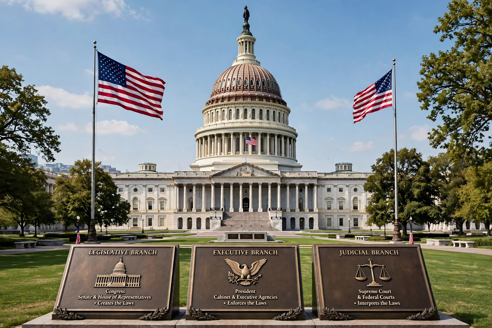

The federal government of the United States is the national government of the United States, a federal republic located primarily in North America, comprising 50 states, five major self-governing territories, several island possessions, and the federal district and national capital of Washington, D.C.

| Formation | 4 March 1789 |
|---|---|
| Constitution | Constitution of the United States |
| Legislature | Congress |
| Executive | President of the United States |
| Judiciary | Supreme Court |
| Seat | Washington, D.C. |
Under the Articles of Confederation the early government lacked effective taxation and executive power. The Constitutional Convention of 1787 drafted a new constitution, ratified in 1788 and effective in 1789, creating a stronger federal system with separation of powers.
Article I vests legislative power in Congress, consisting of the Senate (100 members, two per state) and the House of Representatives (435 voting members apportioned by population). Congress makes laws, declares war, levies taxes, and oversees the executive.
Article II vests executive power in the President, who serves as head of state and head of government, commander-in-chief, and chief executive of federal departments and agencies. The Vice President and Cabinet support this role.
Article III establishes the Supreme Court and lower federal courts. Judges are nominated by the President and confirmed by the Senate, serving during good behaviour.
Powers not granted to the federal government nor prohibited to the states are reserved to the states or the people under the Tenth Amendment. See also Federalism, Civilian Conservation Corps as an example of a federal programme, and National parks.